纸垂Paper streamers
JOURNEY — Eight Days, Five Places
2026 年 8 月，八天，五个地方。
这一组是按地点编号而不是按时间排列的——离开之后，时间会重新排列地点。
August 2026. Eight days, five places. This set is ordered by location rather than by date, because once you leave, time rearranges the places for you.
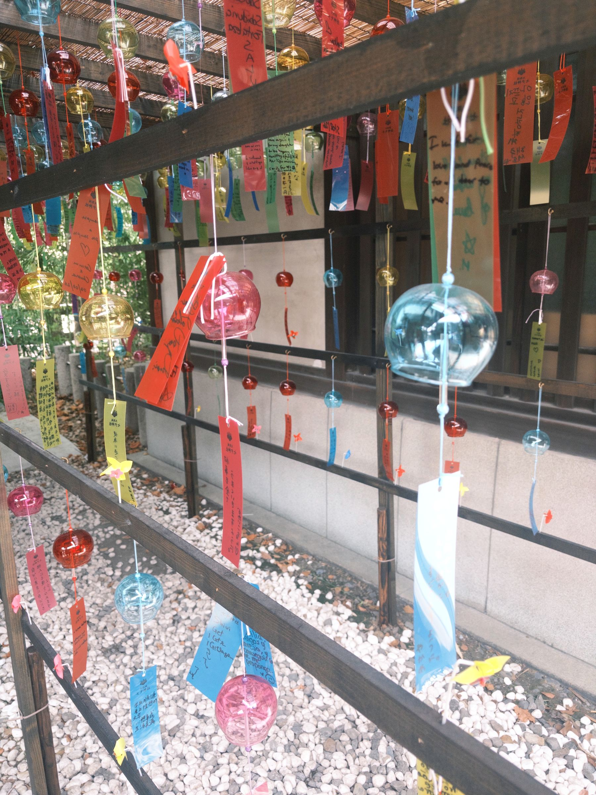
航班延误四小时，于是有了那张云上的照片。
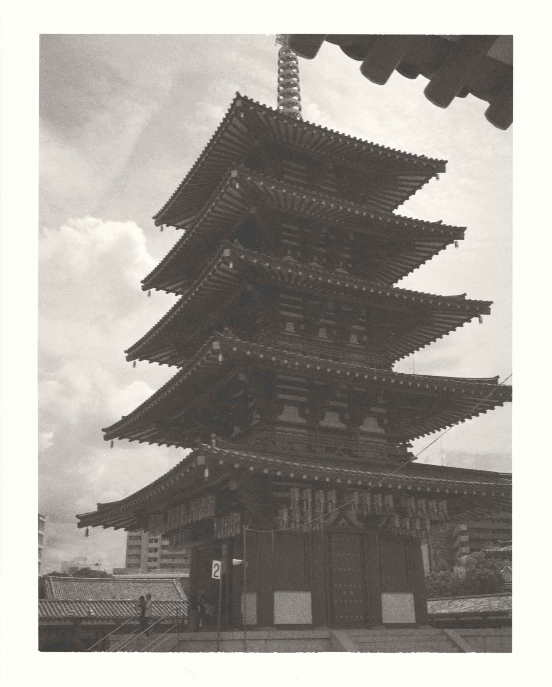
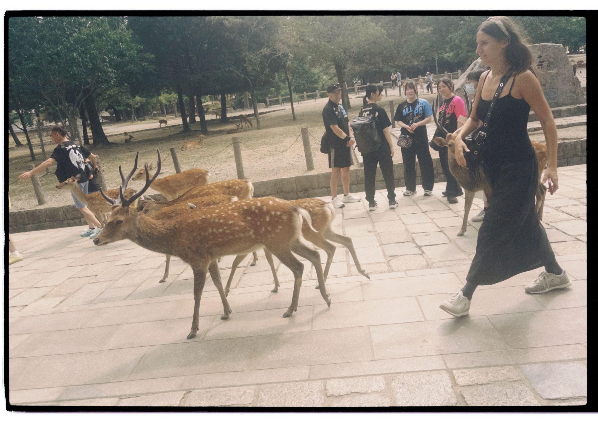
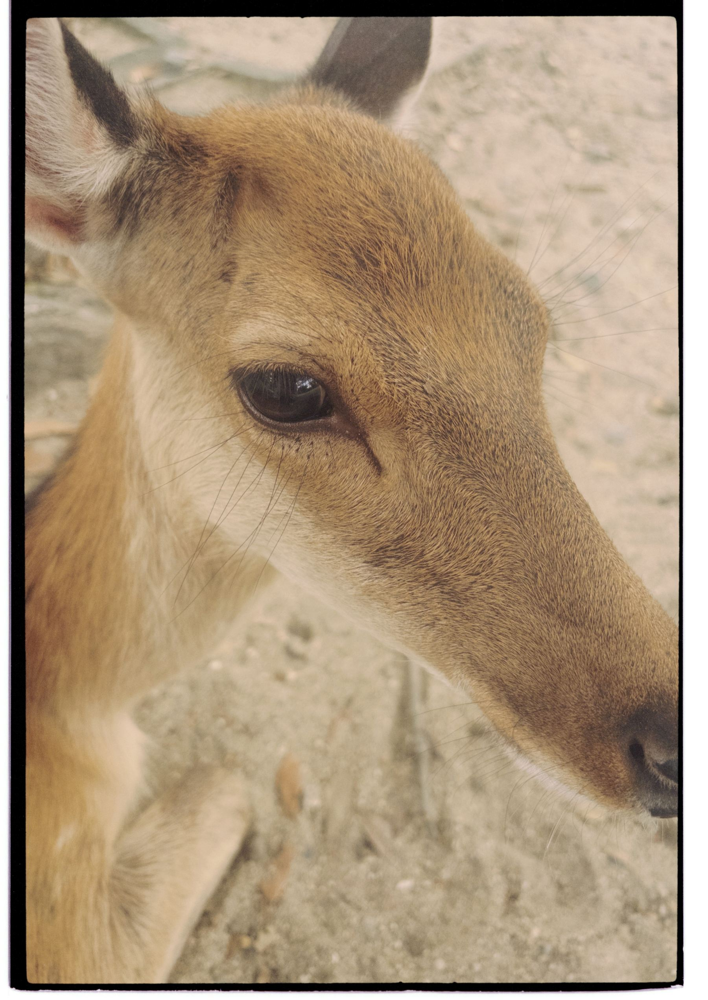

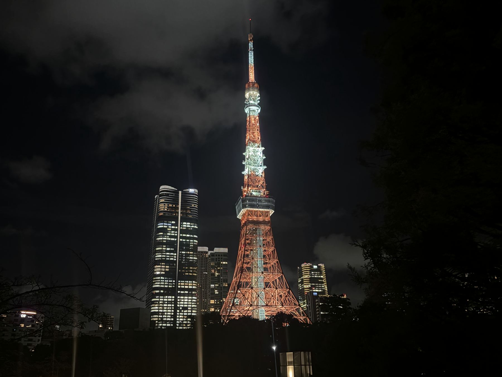

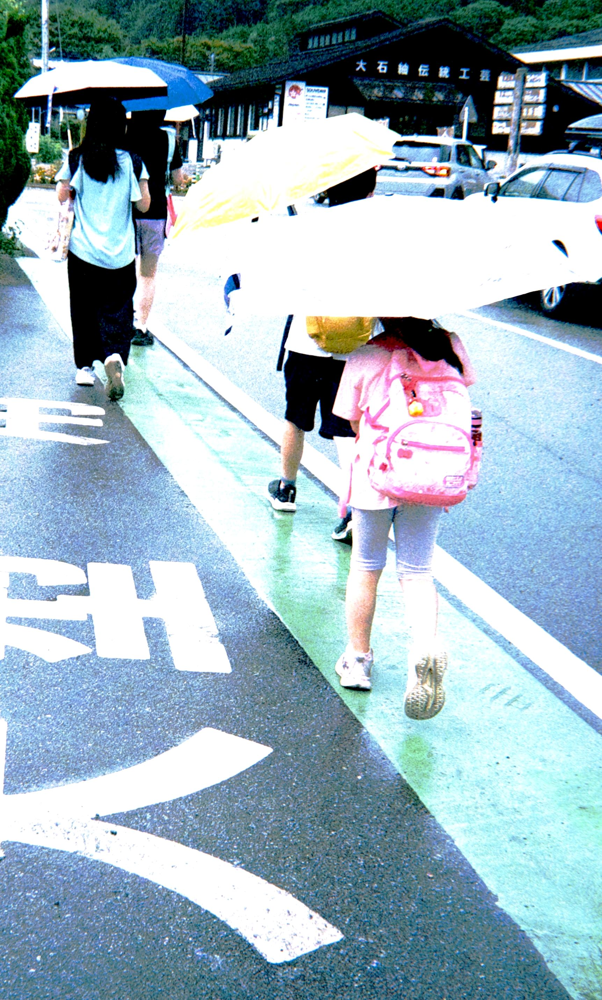
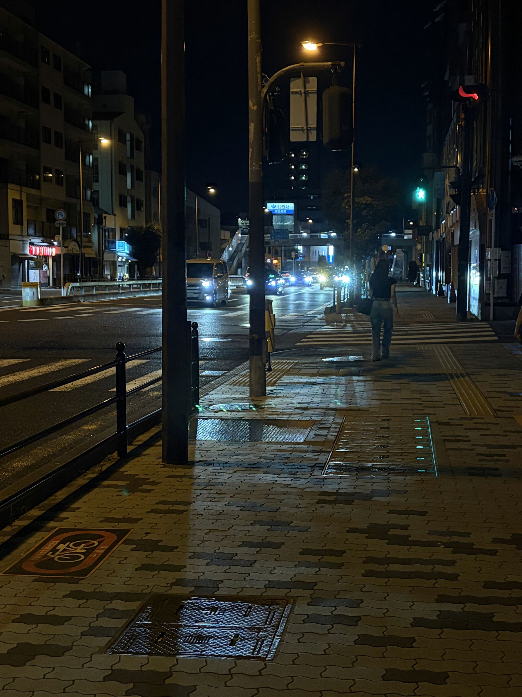
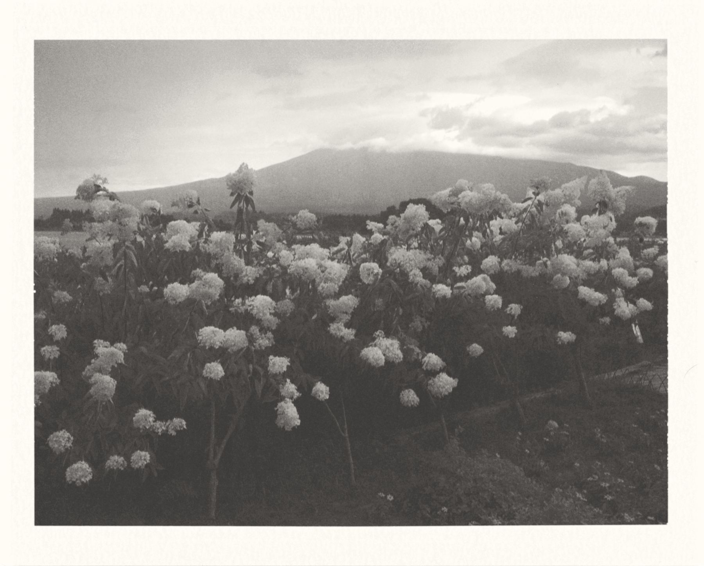

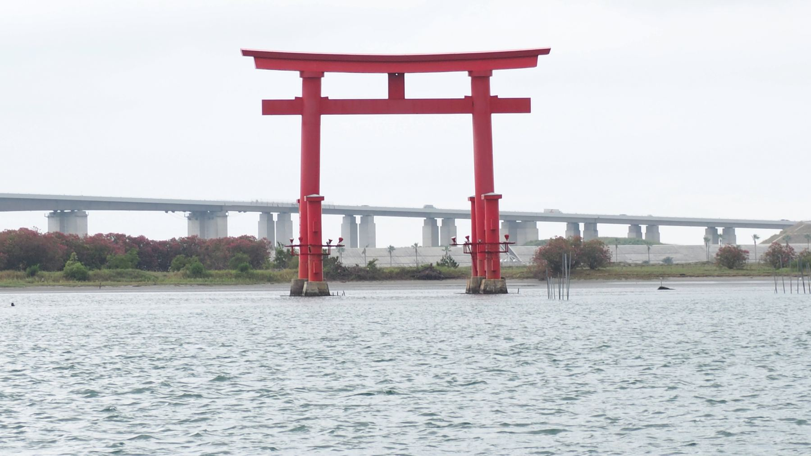
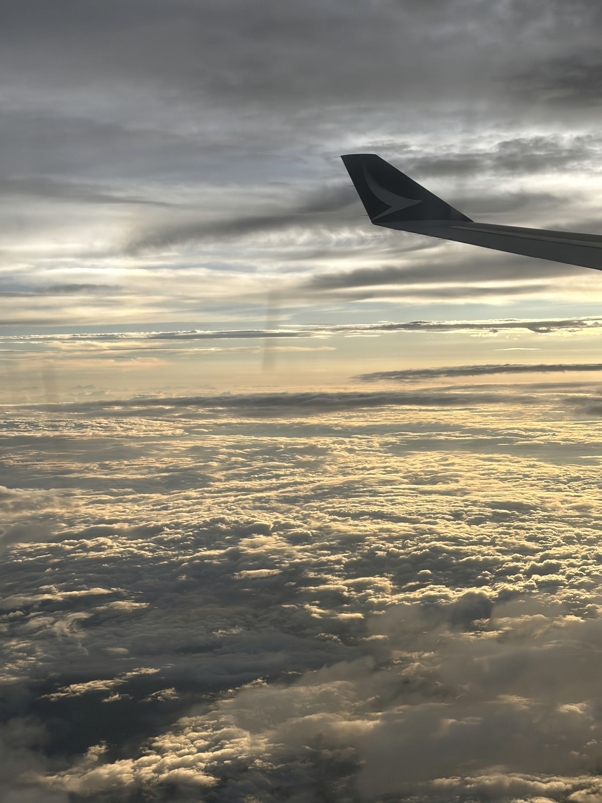
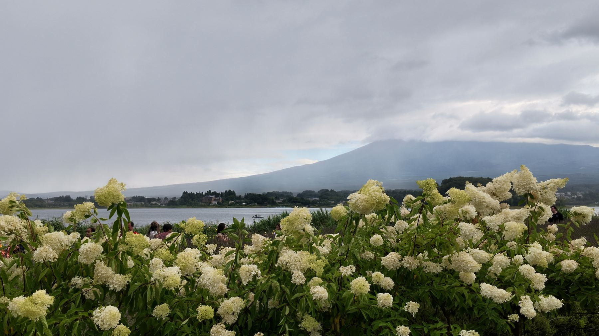
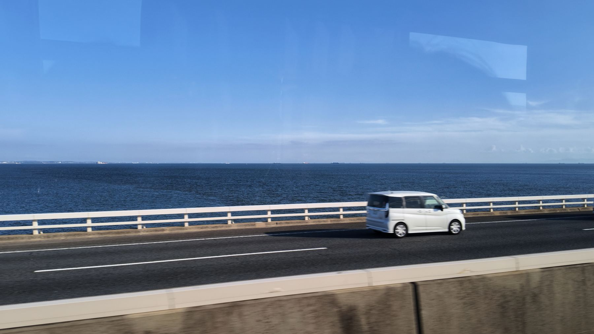
园